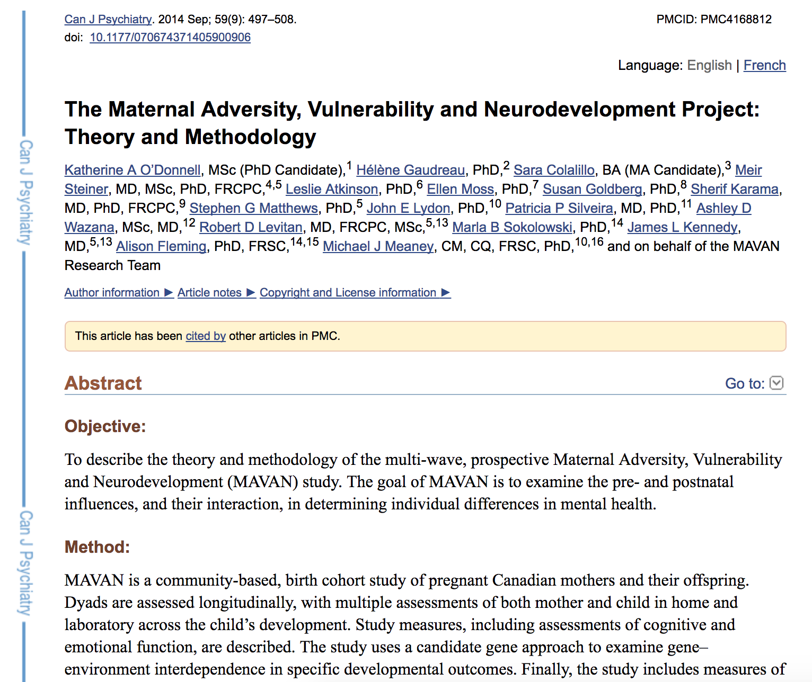

What’s involved?
Longitudinal Acquisition, Storage and Curation, Interoperability, Reproducibility, Transfer, Anonymization, Security, Privacy, Ethics, APIs, Validation, Quality Control, Protocol Checking, Preprocessing, Analysis, HPC, Provenance, Ontological Standarization, Data Harmonization, Upgrades, Maintenance, Bug Fixes, User Interface, Javascript, Bootstrap, Tracking, Extensibility, Data Management, Summary Statistics, Workflows, Development, Tool Integration, Data Sharing, Download, Multi-Modal Linking, Querying, Image Processing, Visualization, Networking, System Administration, Partnerships, Funding, HR ...No big deal!
LORIS-CBRAIN INTEGRATION
Benefits vs Challenges

WHAT IS LORIS?

“LORIS is a modular and extensible web-based data management system that integrates all aspects of a multi-center study: from heterogeneous data acquisition (imaging, clinical, behavior, genetics) to storage, processing and ultimately dissemination.” |

|
WHAT IS LORIS?
|
|
“..is a modular and extensible web-based data and project management software for neuroimaging research studies. It is an OPEN SOURCE framework and database suitable for managing large datasets.” |
Heterogenous data acquisition |
|
Storage, processing & dissemination |
What does LORIS do?

What does LORIS do?

Extensible and modular design


|


|
LORIS Globally
What does LORIS actually do?
DATA ENTRY
|

|
Heterogenous Data
Imaging Data
1. Acquisition & Storage
2. Visualisation:
Imaging Browser, BrainBrowser3. Quality Control:
Radiological Review Module, DCC MRIData Querying
- Imaging Statistiscs
- Data Querying Tool (DQT)
What can LORIS do (pointform)
- Long Term Storage - Large datasets are valuable assets (e.g.ADNI)
- Anonymity/Privacy - Ethics/IRB compliance and patient confidentiality
- Data Sharing- Cross project collaborations
- Secure Web Access- Available through a web browser
- Heterogeneous Data Management - Single platform for MRI, PET, Clinical & Genetics data
- Multimodal Data Querying - Easy querying of data, without requiring a programmer
- Quality Control - Protocol violations, artefact detector, inter-rater reliability
- Summary Statistics - Demographics, imaging, data entry
- Processing Platform - Seamless serving of data to processing environments
- Radiological Reviews - Visualization, including module to curate
- Import/Export Capabilities - .xls, .csv, etc.
- Biobanking - Tissue, blood and saliva samples
- Visualization - 3D and 4D
- Customizable & Extensible - New modules and features are possible
- Open Source - Full access to source code. Code is free.

|

|
|


|

|
|


|

|

|
|
|  |
|
Open Science

|

|
Open Science

Cyberinfrastructure

Open Science
|
“We’re doing a really shitty job." -- Guy Rouleau |
|
Login

Dashboard
Summary Statistics
LORIS summary statistics

Permissions/User control

List of subjects

Timepoints

Battery of Measures
For list of 400+ instruments: https://sites.google.com/site/lorisinstrumentlist

Psychometric Subject Summary

Psychometric Data Entry

Survey Module

Imaging Browser

Imaging Quality Control
BrainBrowser
..a set of web-based 3D visualization tools primarily used for viewing neurological data i.e. MRI scans.
It allows for real-time manipulation and analysis of 3D neuroimaging data through any modern web browser. TRY ME!
|
|

|
BrainBrowser - 3D Surface Viewer
Protocol Violations


|

|
DICOM archives

Imaging Uploader - New

Interactive Protocol Violations - New

Genomics Browser - New
Improved Instrument Builder - New
Configuration module - New

LORIS Roadmap 2016
Easier Installation
DQT integration and improvements
API for imaging
Imaging Browser Enhancements
Documentation - help sections, wikis, code!
Automated Testing
Genomics
QC modules
Better stats
Reduce rependencies - i.e. Quickforms
Data Dictionary Builder

Data Querying Tool

Data Querying Tool - Results

Data Querying Tool - Statistics

Mobile - Responsive layout

Mobile - Data entry

Mobile - Imaging

LORIS - Github - Open Source
https://github.com/aces/Loris

LORIS - Github Usage

LORIS - Requirements
Dedicated developer! (software is free of charge)
LINUX based server
LAMP stack
Perl and other peripheral libraries (i.e DCMTK)
Beer for Samir
LORIS - Requirements for HBHL
Proper resourcing
Reaslitic roadmap
Create use cases
Regular discussions
Beer for Samir
LORIS - Links
Website: www.loris.ca
Demo: https://demo.loris.ca
LORIS developers mailing list: loris-dev@bic.mni.mcgill.ca
Source code: https://github.com/aces/Loris
How can LORIS be useful to you?
Testimonials
"You don't understand... LORIS saved our lives ... We could share our data anywhere. LORIS makes it really hard to share incorrect data. The quality control data is right there. You can share the QC... it's so well QCed" -- Angelina Paolozza (NeuroDevenet, 2015)
Key Features for the lab
Organize your data
Enable Quality Control
Easy data sharing
Provenance capture
Facilitate image visualization
Summary statistics
Facilitate statistical analysis
Linking your data across modalities
Online Data Querying
Additional Features
Centralized data repository
Download data from one place
Centralized Document Repoistory
Backup your data
Consent is factored in
Anonimyzed automatically online
Raw data can be accessed (e.g. DICOM archiver)
Tablet Friendly - Survey module
Data Sharing Initiatives
Public Data Repositories
Collaborative Data releases
CBRAIN hooks
Ontologicial standardization (e.g. BIDS)
External Provenance (e.g. NIDM)
Interoperability with other competitors
Open Science at the MNI
|
|
|

|
Thank you!Acknowledgements: Alan Evans, Alex Zijdenbos, Dario Vins, Jonathan Harlap, Matt Charlet, Andrew Corderey, Sebastian Muehlboeck, Reza Adalat, Louis Collins, Vladimir Fonov, Marc Rousseau, Mia Petkova, Rathi Gnanasekaran, David Brownlee, Tarek Sherif, Pierre Rioux, Nic Kassis, Leigh MacIntyre, Claude Lepage, Ilana Leppert, Natasha Beck, Tristan Glatard, Bert Vincent, Lindsay Lewis, Najma Mahani, Elodie Portales-Casamar, Alden Woodward, Sylvain Milot, Jean Francois Malouin, Sylvain Baillet, Daniel Kroetz, Martin Weiss, Mathieu Desrosier, Jason Karamchandani, Amit Bar-Or, Ted Fon, John Brietner, Derek Lo, Patrick Bermudez, Chris Steele, Pamela Patterson and one of my favourites: Pierre Bellec! LORIS team on left |